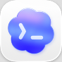
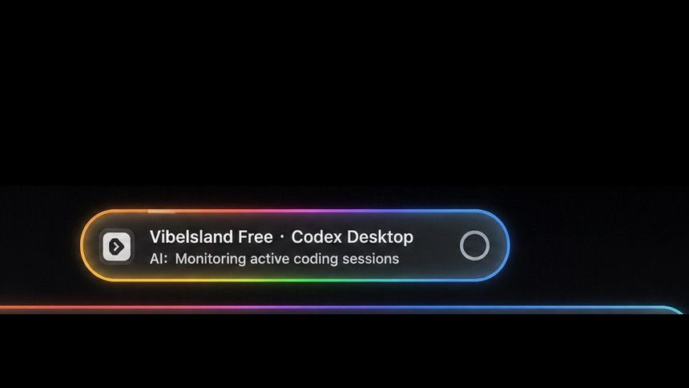
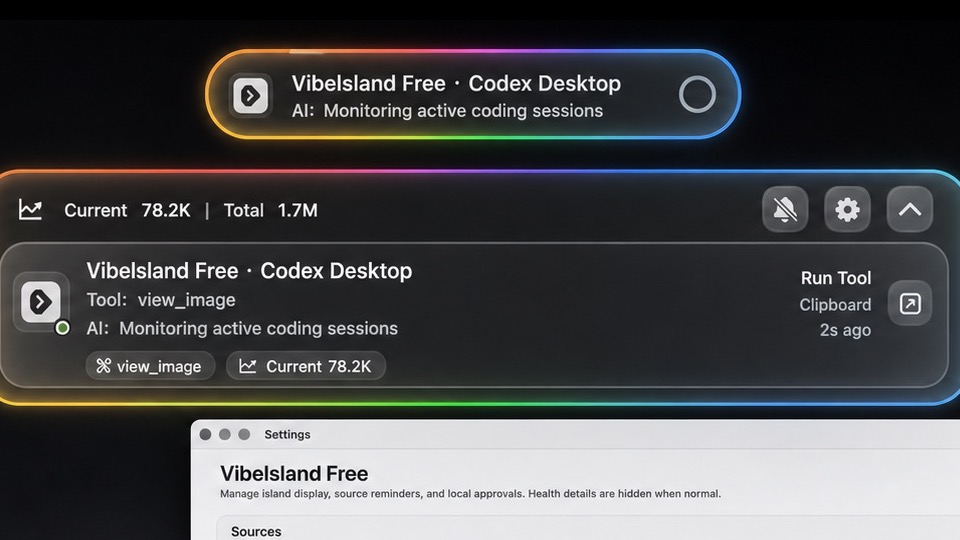
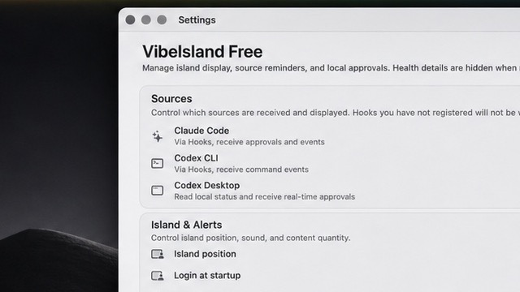

运行
RGB 光带标记正在工作的工具，不必切回终端也能知道任务仍在推进。

macOS 14+ · 下载 v0.2.1 · 源码持续更新
把 Claude Code、Codex CLI 与 Codex Desktop 的本地会话状态留在屏幕顶端。空闲时安静，运行中呼吸，需要回应时发光。
免费 · 本地优先 · 零遥测
支持
Claude Code 与 Codex CLI 通过 Hooks 转发的事件、Codex Desktop 的实时连接，都在同一个浮岛里显示。

Codex Desktop实时连接形态
浮岛根据会话状态自动变形。颜色就是协议，位置始终保持低干扰。
RGB 光带标记正在工作的工具，不必切回终端也能知道任务仍在推进。
需要权限时变成琥珀色；支持的来源可处理允许一次、本轮允许、拒绝和取消任务，Codex CLI Hook 只回传允许或拒绝。
多个 agent 同时运行时，以堆叠头像展示谁在思考、谁在等待。
本地优先
它只读取你电脑里的本地状态文件，用来在浮岛上显示进度。没有云端，没有遥测，源码完全开放。

收起浮岛：运行状态常驻顶部。

展开浮岛：查看工具调用和最近进度。

设置界面：管理来源、提醒与本地选项。
安装
v0.2.1 使用 ad-hoc 签名，首次启动需要在系统设置中手动信任。
>_ - island.app 拖进 Applications。shasum -a 256 -c 对比官方校验文件，确认包体未被篡改。$ shasum -a 256 -c Vibelsland-Free-0.2.1-macos.zip.sha256
Vibelsland-Free-0.2.1-macos.zip: OK